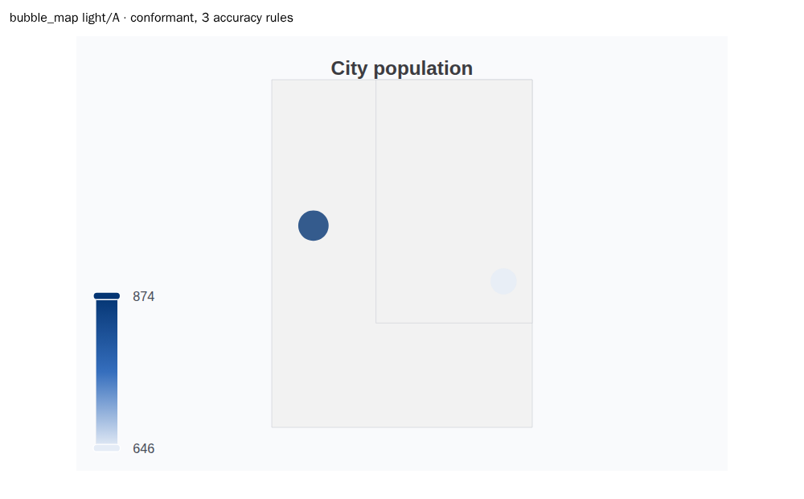
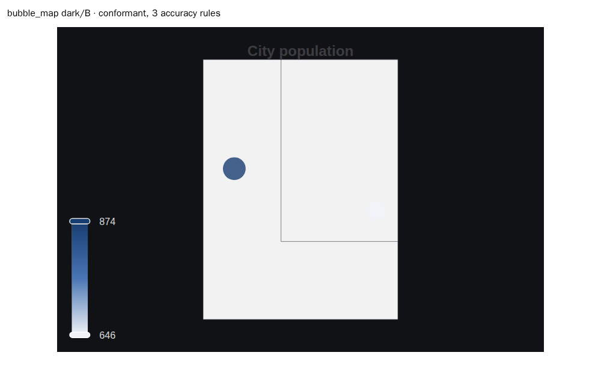
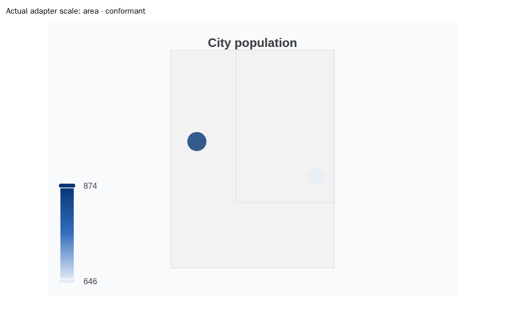
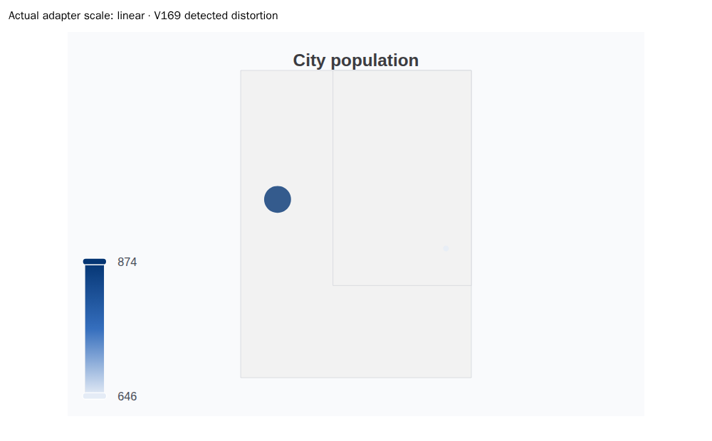
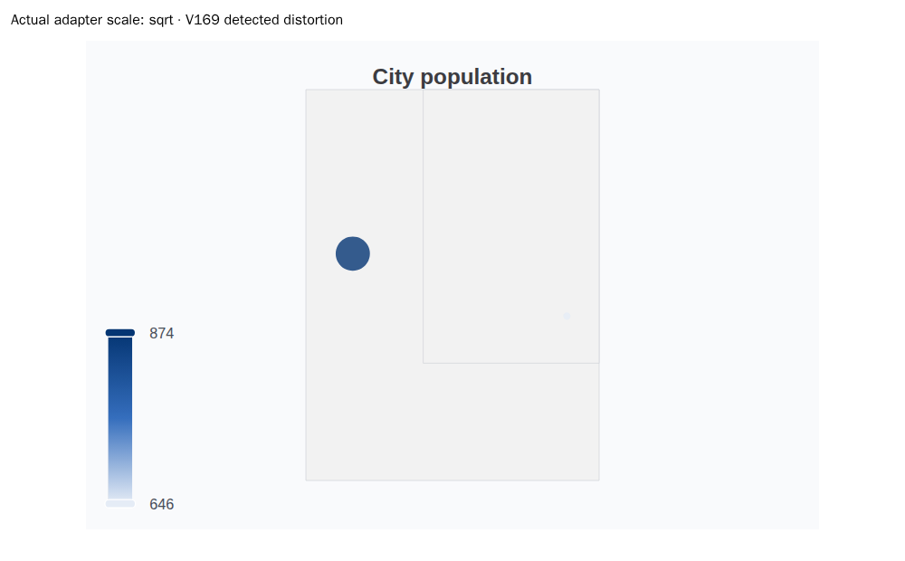
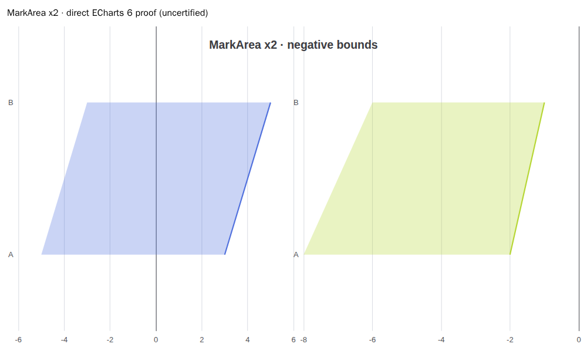
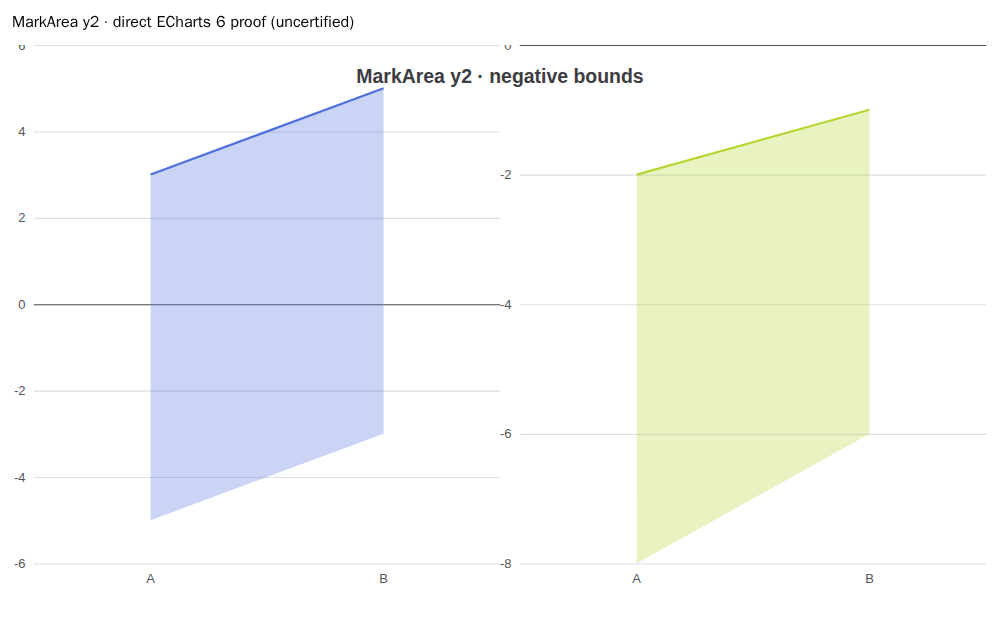
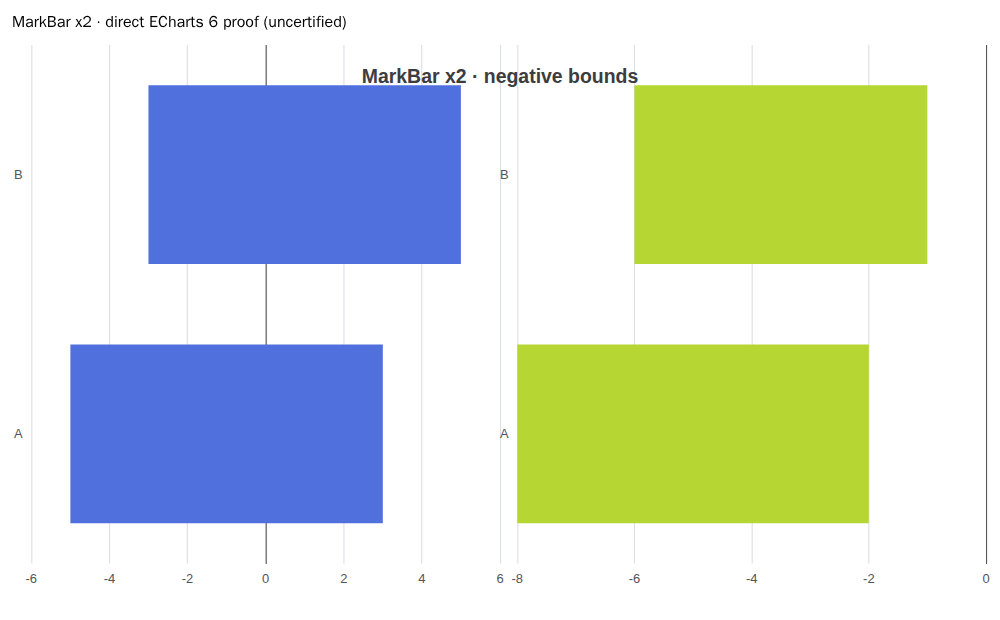
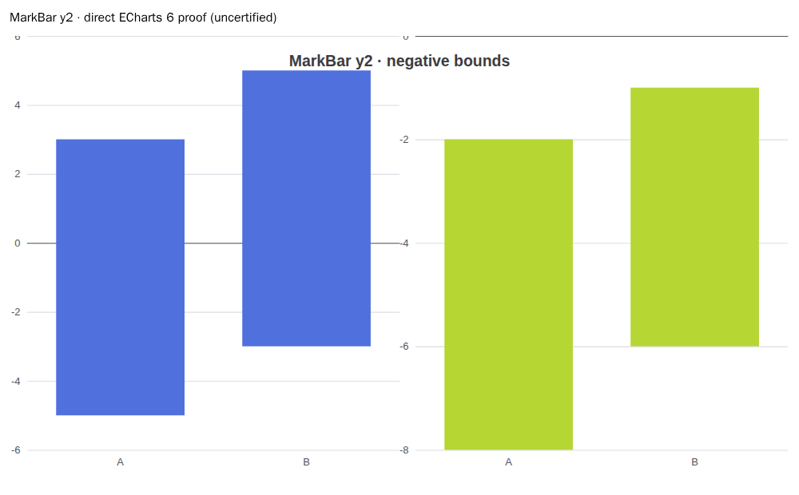

The first four cells are public conformant scopes. Scale mutations reproduce the two rejected distortions. Bands use ECharts directly; public Cartesian ECharts remains spec-only and uncertified.









Chromium 141.0.7390.37. Builder self-certification: false.